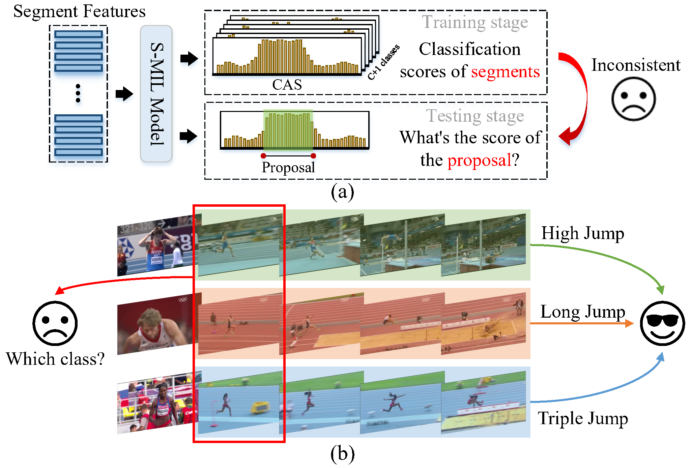

1University of Science and Technology of China, 2Deep Space Exploration Lab
Weakly-supervised temporal action localization aims to localize and recognize actions in untrimmed videos with only video-level category labels during training. Without instance-level annotations, most existing methods follow the Segment-based Multiple Instance Learning (S-MIL) framework, where the predictions of segments are supervised by the labels of videos. However, the objective for acquiring segment-level scores during training is not consistent with the target for acquiring proposal-level scores during testing, leading to suboptimal results. To deal with this problem, we propose a novel Proposal-based Multiple Instance Learning (P-MIL) framework that directly classifies the candidate proposals in both the training and testing stages, which includes three key designs: 1) a surrounding contrastive feature extraction module to suppress the discriminative short proposals by considering the surrounding contrastive information, 2) a proposal completeness evaluation module to inhibit the low-quality proposals with the guidance of the completeness pseudo labels, and 3) an instance-level rank consistency loss to achieve robust detection by leveraging the complementarity of RGB and FLOW modalities. Extensive experimental results on two challenging benchmarks including THUMOS14 and ActivityNet demonstrate the superior performance of our method.
|
The S-MIL framework has two drawbacks.
|

|
@InProceedings{Ren_2023_CVPR,
author = {Ren, Huan and Yang, Wenfei and Zhang, Tianzhu and Zhang, Yongdong},
title = {Proposal-Based Multiple Instance Learning for Weakly-Supervised Temporal Action Localization},
booktitle = {Proceedings of the IEEE/CVF Conference on Computer Vision and Pattern Recognition (CVPR)},
month = {June},
year = {2023},
pages = {2394-2404}
}